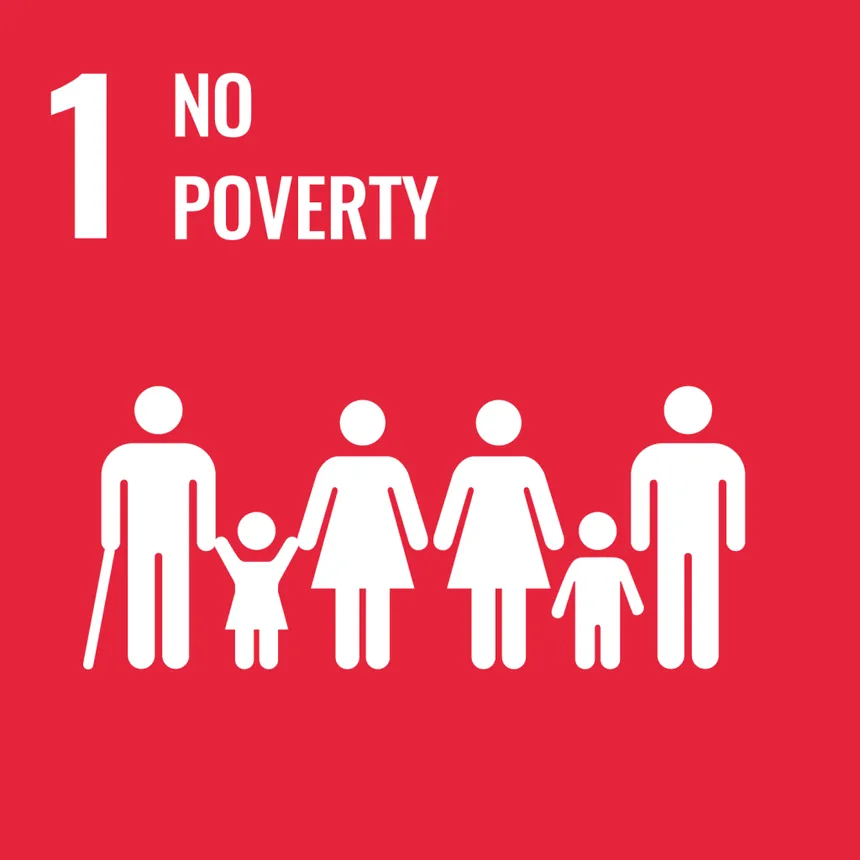
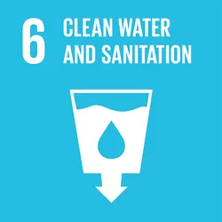
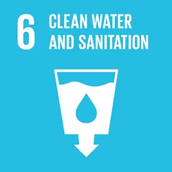

The ocean drives global systems that make the Earth habitable for humankind. Our rainwater, drinking water, weather, climate, coastlines, much of our food, and even the oxygen in the air we breathe, are all ultimately provided and regulated by the sea.
Careful management of this essential global resource is a key feature of a sustainable future. However, at the current time, there is a continuous deterioration of coastal waters owing to pollution, and ocean acidification is having an adversarial effect on the functioning of ecosystems and biodiversity. This is also negatively impacting small scale fisheries.
Saving our ocean must remain a priority.
Marine biodiversity is critical to the health of people and our planet. Marine protected areas need to be effectively managed and well-resourced and regulations need to be put in place to reduce overfishing, marine pollution and ocean acidification.
Each year, an estimated one third of all food produced – equivalent to 1.3 billion tonnes worth around $1 trillion – ends up rotting in the bins of consumers and retailers, or spoiling due to poor transportation and harvesting practices.
If people worldwide switched to energy efficient light bulbs the world would save US$120 billion annually.
TARGETS
14.1 By 2025, prevent and significantly reduce marine pollution of all kinds, in particular from land-based activities, including marine debris and nutrient pollution
14.2 By 2020, sustainably manage and protect marine and coastal ecosystems to avoid significant adverse impacts, including by strengthening their resilience, and take action for their restoration in order to achieve healthy and productive oceans
14.3 Minimize and address the impacts of ocean acidification, including through enhanced scientific cooperation at all levels
14.4 By 2020, effectively regulate harvesting and end overfishing, illegal, unreported and unregulated fishing and destructive fishing practices and implement science-based management plans, in order to restore fish stocks in the shortest time feasible, at least to levels that can produce maximum sustainable yield as determined by their biological characteristics
14.5 By 2020, conserve at least 10 per cent of coastal and marine areas, consistent with national and international law and based on the best available scientific information
14.6 By 2020, prohibit certain forms of fisheries subsidies which contribute to overcapacity and overfishing, eliminate subsidies that contribute to illegal, unreported and unregulated fishing and refrain from introducing new such subsidies, recognizing that appropriate and effective special and differential treatment for developing and least developed countries should be an integral part of the World Trade Organization fisheries subsidies negotiation
14.7 By 2030, increase the economic benefits to Small Island developing States and least developed countries from the sustainable use of marine resources, including through sustainable management of fisheries, aquaculture and tourism
14.A Increase scientific knowledge, develop research capacity and transfer marine technology, taking into account the Intergovernmental Oceanographic Commission Criteria and Guidelines on the Transfer of Marine Technology, in order to improve ocean health and to enhance the contribution of marine biodiversity to the development of developing countries, in particular small island developing States and least developed countries
14.B Provide access for small-scale artisanal fishers to marine resources and markets
14.C Enhance the conservation and sustainable use of oceans and their resources by implementing international law as reflected in UNCLOS, which provides the legal framework for the conservation and sustainable use of oceans and their resources, as recalled in paragraph 158 of The Future We Want
Click the respective images to know more about the SDG's:



 
